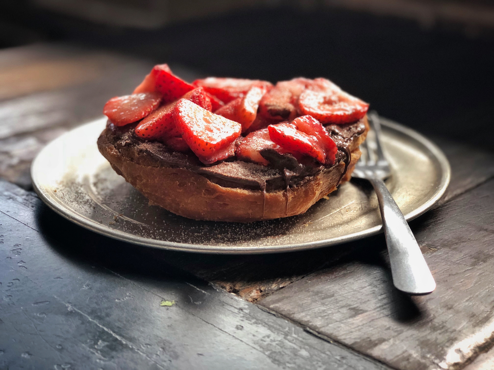

Les Bagels de Jacque
Meilleur Bagel à Montréal
À son arrivée au Canada en 1953, Myer Lewkowicz, le fondateur de la boulangerie St-Viateur Bagel, ne connaissait absolument rien à la cuisine, et encore moins à la fabrication de bagels. Mais Lewkowicz connaissait la faim.Il avait grandi dans une grande famille pauvre d'un village juif, ou shtetl, près de Cracovie, en Pologne. En 1942, il fut arrêté par la Gestapo et envoyé au camp de concentration de Buchenwald. Des années plus tard, alors qu'il s'adressait à une classe d'élèves du secondaire, Lewkowicz a dit: « À Buchenwald, tout ce dont je rêvais, c'était d'avoir un bout de pain. Après la guerre, Lewkowicz a vécu et travaillé en Allemagne jusqu'en 1952, puis il a été découvert par les Services canadiens d'assistance aux immigrants juifs (JIAS). Les JIAS l'ont fait immigrer à Montréal, où il a pu se trouver un emploi à la boulangerie de Hyman Seligman, la Montreal Bagel Bakery, située sur la rue Saint-Laurent. C'est en travaillant avec Seligman et ses partenaires que Lewkowicz a appris le métier de boulanger. En 1957, il a fondé sa propre boulangerie de bagels avec Hyman Seligman, sur la rue St Viateur, avec sa femme Emma à ses côtés.
En 1996, de concert avec son partenaire Marco Sbalno, Joe Morena et ses fils Vincenzo, Nicolò et Roberto ont commencé prendre de l'expansion, ouvrant un nouveau café-boulangerie St-Viateur Bagel sur la rue Mont-Royal. Un autre a suivi en 2001 sur l'avenue de Monkland. En 2012, un troisième St Viateur Bagel et Café ouvre ses portes à Dollard-des-Ormeaux. Le groupe exploite également plusieurs autres boulangeries qui desservent non seulement Montréal, mais aussi toute l'Amérique du Nord. Les gardiens de cette longue tradition, les Morena et les Sblano, de même que leur fameux produit, ont été largement reconnus et louangés dans les journaux et à la télévision, partout en Amérique du Nord. St-Viateur Bagel a aussi fait l'objet de reportages dans de nombreuses émissions télévisées de Travel Channel et de Food Network, entre autres, comme Glutton for Punishment avec Bob Blumer, The Today Show avec Kathie Lee Gifford et Hoda, ainsi que No Reservations et The Layover avec Anthony Bourdain. Malgré cette reconnaissance à l'échelle du continent, St-Viateur Bagels demeure fermement ancrée dans sa communauté locale. Joe Morena, Marco Sblano et leurs familles sont engagés à s'investir dans les causes du quartier et de la ville qui les ont soutenus pendant tout ce temps. Ainsi, St-Viateur Bagel propose annuellement un petit-déjeuner bénéfice afin de soutenir la Fondation Générations dans sa lutte contre la pauvreté chez les enfants de Montréal.
Evaluez-nous sur Google.